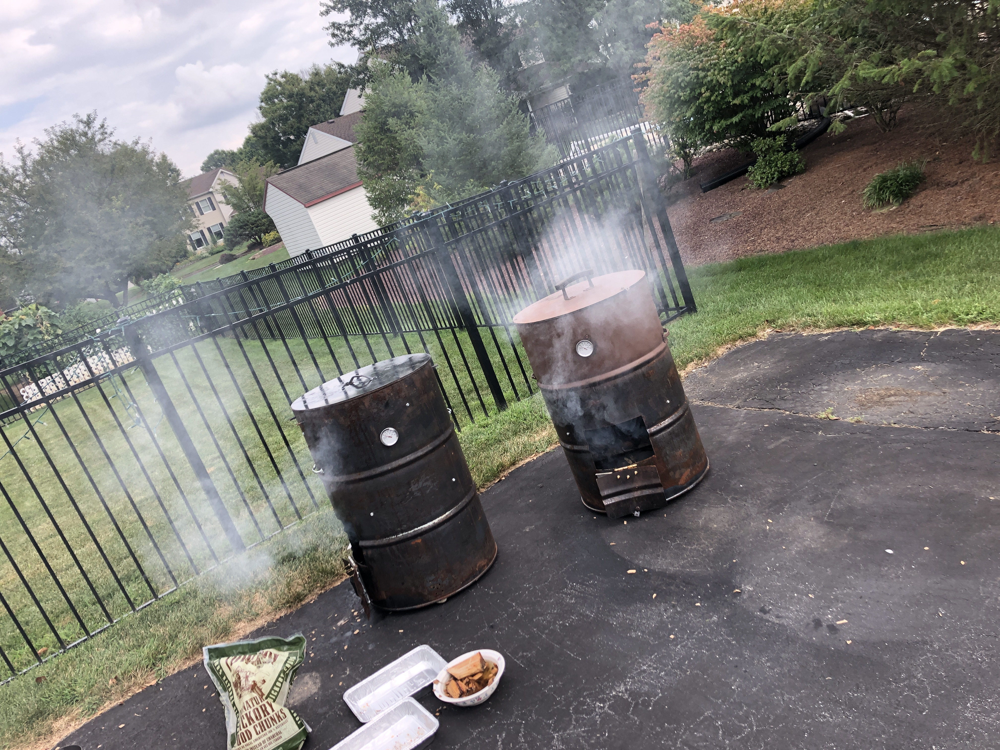

Embedded Writing Activity
Craigslist Product Review Over the summer: I decided to purchase two large metal drums in order to help my friend in constructing a smoker (for food). The seller was found in New Tripoli, Pennsylvania, which was essentially the middle of nowhere. This individual was a very nice, older man and even helped us load the 55-gallon drums onto the truck we had. Long story short, the smoker itself was a success, but the ozone surrounding our Earth took a hit. The seller failed to inform us that the drums were filled with oil. We intended to burn the drums to clean them originally but after opening the barrel,the aroma of oil filled the air around us. At this point my friends and I realized we simply had no choice. We had to destroy the environment. We burned the barrels at very high temperatures and completed the project, but knowing oil was in the barrel would have been beneficial for our cause and nature. On the bright side, we now have a smoker and it works fairly well.
REVISED:
This summer, my friends and I brainstormed a project for us to build. After deep thought, our bright minds decided to build homemade smokers. To begin our build we decided to purchase four 55 gallon drums off of a nice man from Craigslist. After a thirty minute drive through fields and more fields, my friend and I arrived in New Tripoli, PA. We pulled into the driveway of a very nice two-story home with a man chopping wood outside. This white-bearded man, that one might mistaken for Santa Claus, was the seller we previously contacted. He helped us load up the drums and sent us on our way. After unloading the drums back at home, my friends and I cut open each barrel only to realize they were all previously filled with oil. After an incredibly short debate, we all agreed there was only one option. We had to destroy the environment. Nothing would stop us from completing our summer project. Barrel fires blazed in the driveways of our suburban neighborhood, destroying the ozone layer little by little. We would have appreciated knowing that oil was once in these drums, but now I have a smoker.